Module 6 — Onboarding identities (non-authoritative sources)
English study notes in the course's five-lesson order. Paraphrased explanations expand the inspected diagrams and process panels. Original English images are retained alongside their subjects.
6.1 Overview
Trey introduces the second part of onboarding: connect non-authoritative systems, correlate their accounts with existing identities, collect access data and validate the combined result. The returning-learner panel highlights improved coverage of account-correlation configuration.
 Onboarding implementation steps
Onboarding implementation stepsThe seven-stage diagram repeats the end-to-end process: clean source data; configure authoritative sources; aggregate authoritative records; resolve creation exceptions; configure non-authoritative sources; aggregate their accounts and entitlements; then review the combined identity data. This module develops the last three stages. The source page uses an older module number for the preceding authoritative-source material; this study set follows the verified syllabus.
The expanded markers stress consistent mappings and naming, meaningful entitlement categories, and a final accuracy check across both source types. All seven were inspected.
Missing artwork: the common photograph and Overview's Trey banner were not saved.
 Lesson footer
Lesson footer6.2 Account correlation
Match accounts to their owners
Non-authoritative sources contain application, directory or database accounts without being the main people-record system. Account correlation associates those accounts with the identity that owns them, providing the link needed to govern access across systems.
 Non-authoritative configuration stage
Non-authoritative configuration stage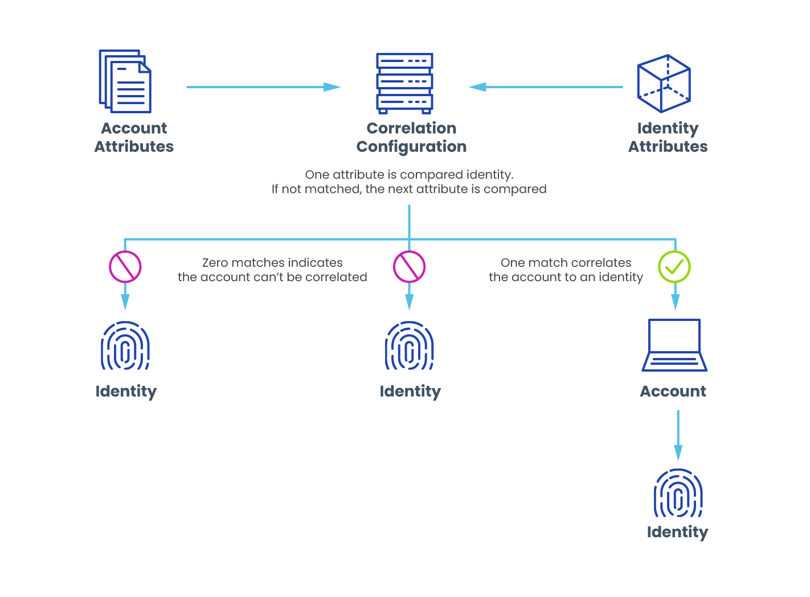
Account-to-identity correlationCorrelation compares a source-account attribute with an identity attribute. A successful, unambiguous match assigns the account to that identity. The lesson emphasizes case sensitivity and the need for a unique match. Some connectors include a default matching sequence, which can be adapted to the source's data.
 Narrator transition
Narrator transitionConfigure matching before the first aggregation
The course navigation is Admin > Connections > Sources, select the source, then Account Management > Account Correlation.
 Correlation configuration
Correlation configurationThe four expanded markers explain how to choose an identity attribute such as email, displayName or uid, select its corresponding account attribute, prioritize likely matches, and add or remove criteria. Lower-priority rows are fallbacks when earlier comparisons fail.
AI-driven recommendations
Recommendations propose attribute pairings and estimate how many accounts they can correlate. The explanation associated with a recommendation shows the potential correlation percentage. Add Recommendation inserts a suggested pair at the top of the configuration. When several identity attributes could correspond to one account attribute, choose the pairing that fits the actual data and ownership model.
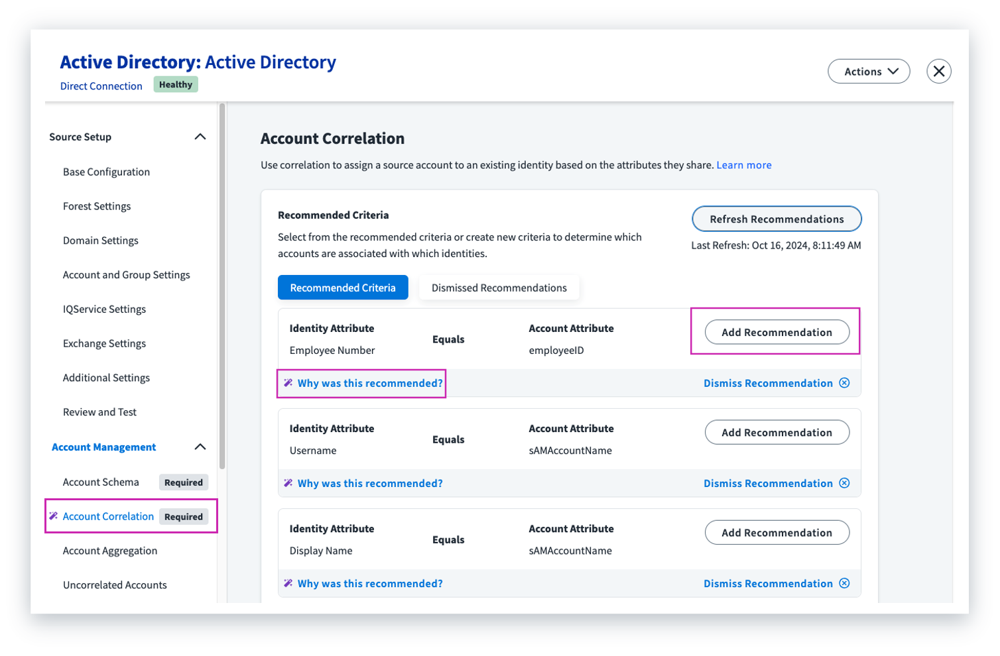
AI correlation recommendations Narrator transition
Narrator transition Section divider
Section dividerTest the correlation logic
Test Account Correlation evaluates a sample to estimate the number and percentage of accounts that would match. Use the result to refine criteria and ordering. A low rate can indicate incomplete or inaccurate source data; adding criteria alone does not fix poor input values.
 Correlation test
Correlation test Narrator transition
Narrator transitionExample: case sensitivity and fallback matching
The five numbered markers begin with Employee Number as the highest-priority comparison. The source value is e001. It does not match E001 because case differs; it also does not match A001 or C004.
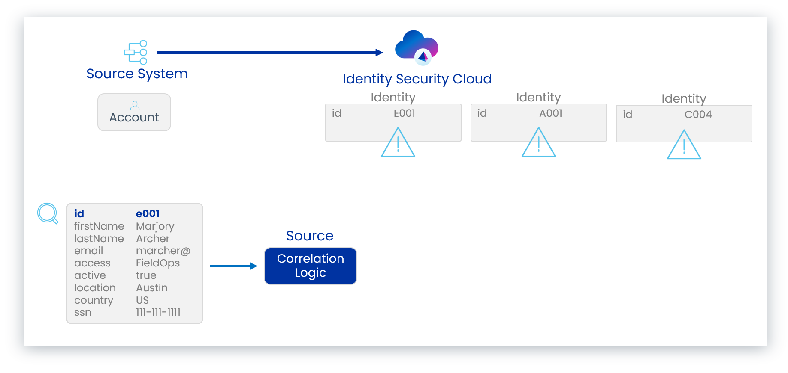
Correlation comparison exampleThe next comparison uses work email. In the course example, it matches the first identity. ISC checks the candidate identities to ensure the match is unique before correlating the account.
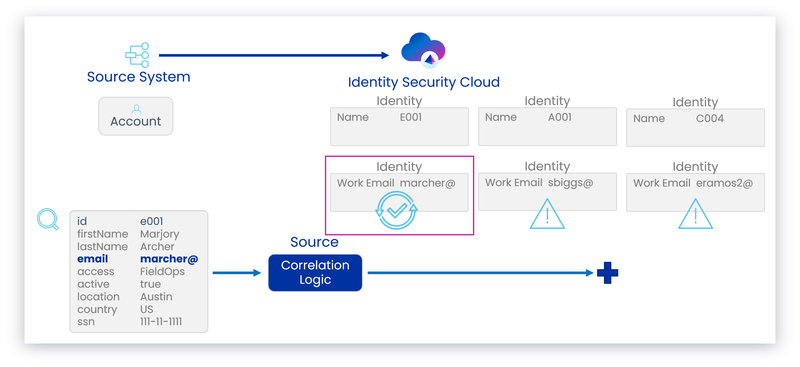
Fallback email comparison Narrator transition
Narrator transition Section divider
Section dividerResolve uncorrelated accounts
An account remains uncorrelated when ISC cannot identify its owner using the configured comparisons. A nickname versus a formal name, stale data or a former worker's account can explain the mismatch.
The lesson presents several options: correct source attributes, correlate a specific account manually, reconsider source configuration when many records are affected, or intentionally retain an uncorrelated account when no corresponding identity should exist. It also mentions deleting and recreating a source as a possible configuration-rework approach; no such operation was performed while producing these notes.
Use the Uncorrelated Accounts report
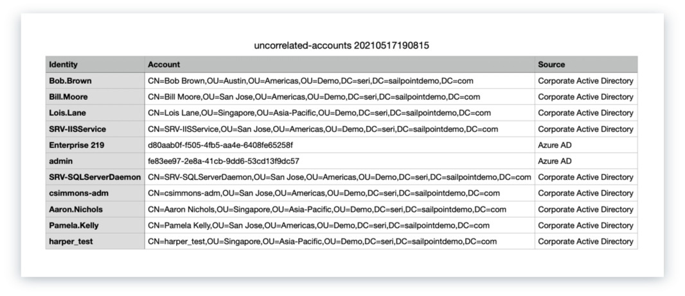
Uncorrelated accounts report- Open Admin > Global > Reports.
- Generate the Uncorrelated Accounts report as PDF or CSV and review each account's source.
- Correct the relevant matching value in the source. For example, when those fields are configured as a pair, a directory sAMAccountName can be aligned with the identity's uid.
- Save the source correction and aggregate again.
Manual correlation
 Manual correlation file
Manual correlation file- Open the source through Admin > Connections > Sources.
- Choose Account Management > Uncorrelated Accounts.
- Download the correlation CSV.
- Populate its userName column with the identifiers of the intended identities as described by the course template.
- Save and upload the completed file on the same page.
A manual correlation persists even if the account's attributes later change. To attach it to a different identity, the existing association must be removed manually first. The course text calls the values in the userName column the associated identities' Account IDs; that wording is retained as a course-template description, rather than an independently validated API-field specification.
 Knowledge check
Knowledge checkCoverage: four configuration markers and five numbered example markers were inspected. No correlation file was uploaded and no quiz was submitted.
6.3 Entitlement aggregation
Entitlements and source entitlements
An entitlement describes an access right: what a subject can reach and what it can do there. Source entitlements are the rights available in a connected system. Importing them builds a catalog even when no current account holds a particular entitlement.
 Account and entitlement aggregation stage
Account and entitlement aggregation stage Entitlement catalog
Entitlement catalogThe aggregation process: all five panels
 Entitlement aggregation process
Entitlement aggregation processThe introductory panel compares entitlement aggregation with account aggregation: both read defined data from a source.
Collection. ISC asks the VA to collect group or entitlement information on schedule or on demand.
 Entitlement collection
Entitlement collectionSchema. The connector's entitlement schema defines the imported fields. The lesson describes API-based customization by an implementer when required.
 Entitlement schema
Entitlement schemaFirst item. The process reads the first entitlement record.
 Read the first entitlement
Read the first entitlementRemaining items. It continues through the groups or rights until the collection is complete, making them available in ISC.
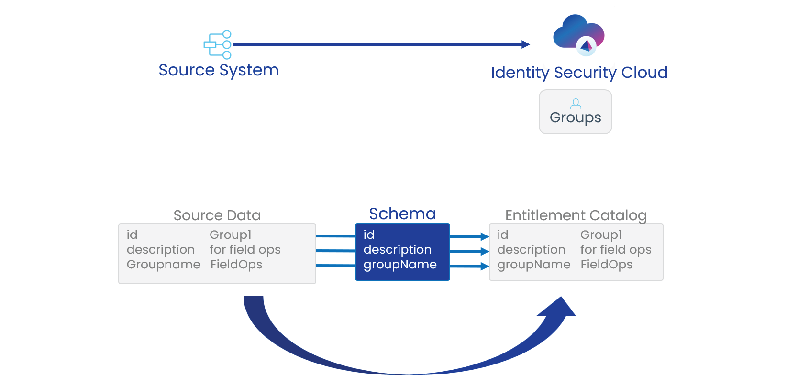
Read the remaining entitlements Narrator transition
Narrator transitionWhy aggregate the full catalog?
Account aggregation shows which access an account currently holds. Entitlement aggregation provides the wider list of available rights, including unused ones. This supports access-model design, provisioning, requests and governance. The course recommends aggregating entitlements before building access models or onboarding the associated users, and classifying sensitive permissions as privileged.
Entitlement management transitionManage and enrich entitlements
After import, mark sensitive access appropriately and configure whether entitlements can be requested. The source's Entitlements page supports selecting individual or all records and downloading or uploading CSV data for maintenance.
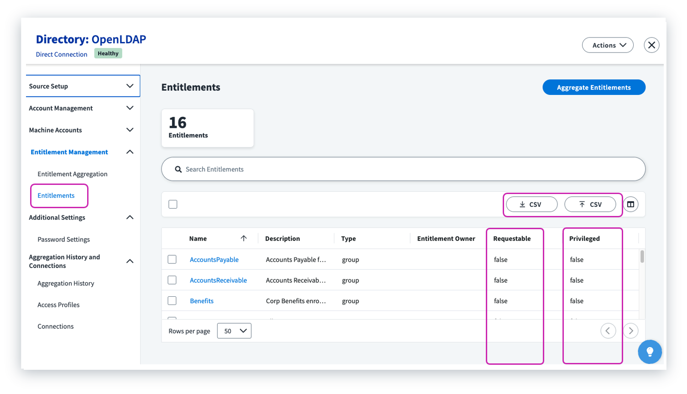
Manage source entitlementsMetadata adds technical and business context beyond a name or simple tag. The course describes predefined fields and up to twenty-five custom attributes; this is a course-version limit, not an independently verified current entitlement.
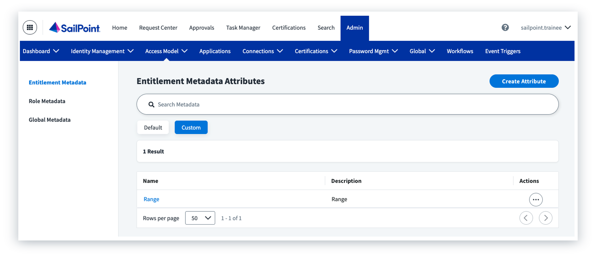
Entitlement metadata Narrator transition
Narrator transitionCentralized entitlement data is available under Admin > Access Model > Entitlements. It supports reviewing the tenant's catalog and combining rights into larger access-model elements.
 Central entitlement data
Central entitlement dataGenAI can suggest readable descriptions for individual entitlements or in bulk. The suggestions remain editable, helping reviewers understand what access provides. Review generated text against the actual permission before relying on it for a decision.
 GenAI entitlement descriptions
GenAI entitlement descriptionsCoverage: all five process-panel explanations were available and read. Metadata, catalog and generated-description examples were retained. No live catalog records were edited.
6.4 Reviewing identity data
Validate the combined records
The final onboarding stage checks that synchronized identity, account and access information is complete, accurate and consistent with the source systems.
 Identity data validation stage
Identity data validation stageNavigate the five identity sections
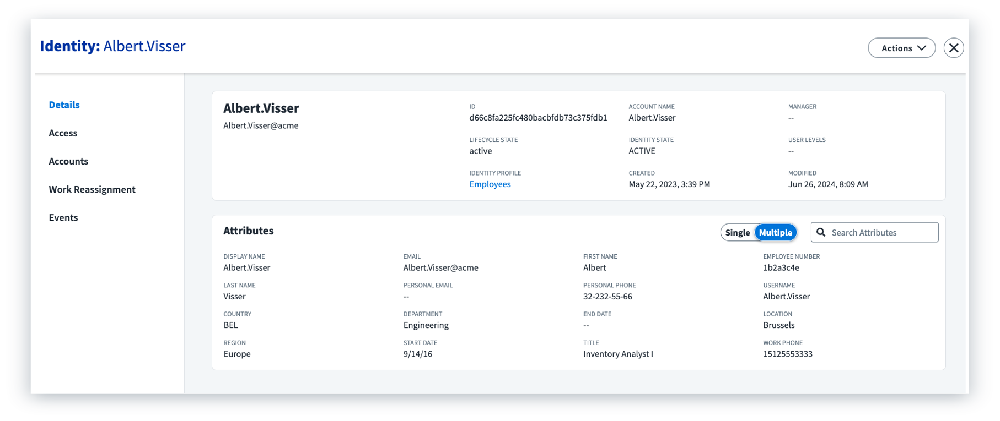
Identity navigationThe five expanded markers describe Details for profile information, Access for assigned rights, Accounts for linked system accounts, Work Reassignment for delegation and Events for activity history.
Details and identity attributes
The example uses Albert's identity. The upper overview contains default and pinned attributes; other populated attributes appear below. Values originate from the identity profile's mappings, either directly from source fields or through calculation.
 Identity details
Identity detailsThe four detail markers identify Lifecycle State as the employment-related state and its origin, Identity State as Active after the example user has established a password and strong authentication, Identity Profile as the link to the relevant authoritative population's settings, and Display Name as the example's sign-in name.
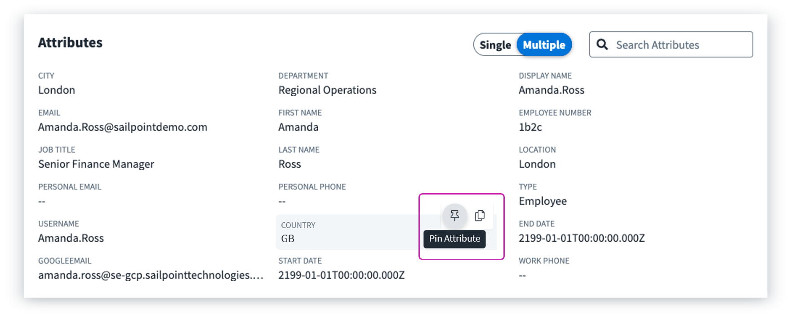
Identity attributesThe Identity Attributes area includes standard and custom populated fields from the HR identity profile. Pin the most useful values to make important governance information easier to see.
Access
The course's assigned-access example uses Amanda. It shows roles, access profiles, entitlements and assigned applications. These are different views of the access associated with the identity.
 Assigned access
Assigned access RolesAccess profilesEntitlements
RolesAccess profilesEntitlements Assigned applications
Assigned applicationsSelect an entitlement to inspect its name and any available additional details.
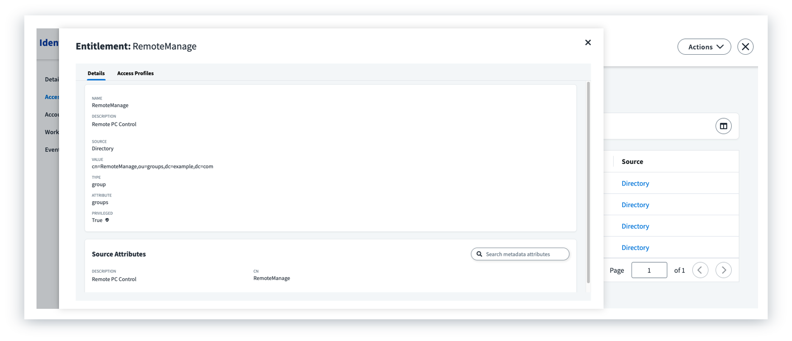
Entitlement detailsAccounts
After aggregation and correlation, each linked source account appears under the identity. The page identifies the account and its source and provides supported actions such as enabling, disabling, unlocking, removing, aggregating or updating correlation.
 Identity accounts
Identity accountsOpen the account name to inspect attributes as received from the source. Account attributes differ from identity attributes, although a directly mapped value may appear in both. Pin important account attributes for quick reference.
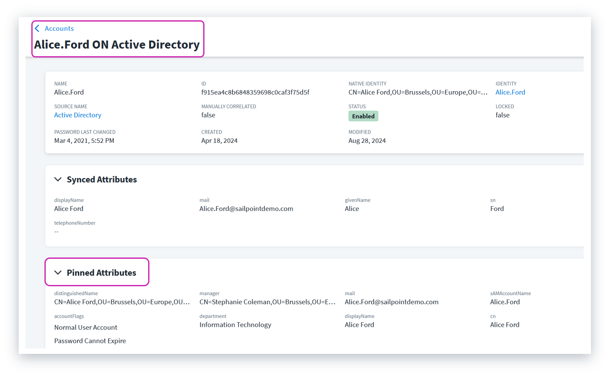
Account attributesThe next example lists Albert's correlated accounts sorted by source name, with an action menu for each.
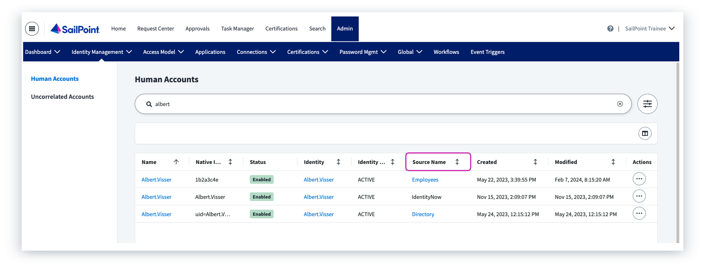
Accounts sorted by source Narrator transition
Narrator transitionEntitlement assignments
An account's assigned entitlements appear in its details. Selecting one opens the corresponding Entitlement Catalog entry with the related information.
 Entitlement assignments
Entitlement assignmentsWork Reassignment
Users can arrange delegation for periods such as vacation. Administrators with appropriate identity-list access can also reassign work, temporarily or permanently. The examples include access-request approvals, certifications and other/manual tasks. The No end date option creates an ongoing assignment rather than a time-limited one.
 Work reassignment
Work reassignmentEvents
Events support searching and downloading recent activity such as access changes and requests, sign-ins and sign-outs, and administrative updates. These records help investigate user issues.
 Events
EventsCoverage: all fifteen markers in this lesson were inspected, including six unnamed markers covering account details, pinned attributes, entitlement assignments, work reassignment and events. The source page exposed existing quiz-feedback text; no quiz response was entered during this capture.
6.5 Recap
The module closes with three capabilities: correlate accounts and resolve unmatched records, discover and aggregate entitlement data, and validate identity, account and access information.
Review these distinctions: automatic matching versus a persistent manual link; the full entitlement catalog versus currently assigned rights; and account attributes versus identity attributes. They explain why an import can complete successfully while its governance data still needs review.
Lesson footerModule coverage and missing materials
All five lesson bodies were read. Forty-nine unique inline image URLs were saved and placed in their lesson sequence. The Overview update and seven process markers, nine correlation markers, five entitlement process panels and fifteen data-review markers were inspected.
Six background-only assets were not saved: the shared photograph, four Trey lesson-banner variants and the recap banner. Exact paths are in coverage.json. External resources, a complete audiovisual transcript and executable course interactions are not included. No live source, entitlement, account correlation or work reassignment was changed, and no quiz was submitted.